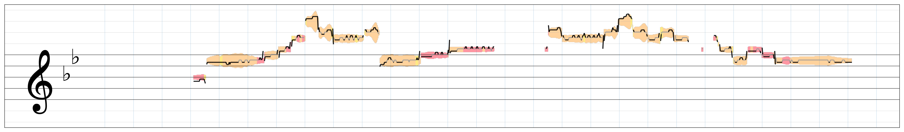

Overview
PracToneVisは、管楽器演奏における音量・音程・音色などの音響特徴を抽出し、 五線譜上に統合的に可視化するシステムです。 従来、主観的に判断されやすかった演奏の特徴やばらつきを、 奏者が直感的に振り返れるようにすることを目的としています。
Problem
管楽器の練習では、音色や表現の良し悪しが感覚に依存しやすく、 指導者がいない場面では自分の演奏を客観的に振り返ることが難しいという課題があります。 また、既存の支援手法は音程やリズムなど一部の要素に限定されることが多く、 演奏全体の特徴を把握しにくいという問題がありました。
Concept
本研究では、演奏を点数化して評価するのではなく、 演奏の特徴を可視化し、奏者自身が気づきを得る ことを重視しました。 これにより、正解を提示するのではなく、自己理解を促す新しい練習体験の創出を目指しました。
Features
ToneLineView
音量・音程・音色を五線譜上に統合表示し、 演奏の全体像を直感的に把握できます。
DetailView
音響特徴量の時系列変化を詳細に確認し、 演奏中の細かな変化を分析できます。
Multiple Takes
複数回の演奏を比較し、傾向やばらつきを可視化することで、 練習による変化を確認できます。
AI-assisted Feedback
可視化結果の解釈を補助するために、AIを用いたフィードバック機能を導入しました。 奏者が自分の音色の特徴を理解しやすくなるよう支援します。
System Image
ロングトーン可視化システムの実行の流れは以下です。
現在開発中のフレーズに対応したToneLineViewの画面は以下です。

Technology
Pythonを用いた音響解析、音響特徴量抽出、クラスタリング、可視化処理を実装しました。 また、可視化結果の解釈を補助するためにAIフィードバックも導入しました。 演奏データをもとに試作と検証を繰り返し、 情報量と直感的な理解の両立を意識して設計しました。
Result
【参加学会】
- WISS 2025（査読付き）：https://www.wiss.org/WISS2025Proceedings/ https://www.wiss.org/WISS2025/
- 情報処理学会第88回全国大会：https://www.ipsj.or.jp/event/taikai/88/WEB/index.html
- 情報処理学会第145回音楽情報科学研究会：https://www.ipsj.or.jp/kenkyukai/event/mus145.html
【受賞歴】
- 情報処理学会第88回全国大会：学生奨励賞https://www.ocha.ac.jp/news/d017639.html
- 情報処理学会第145回音楽情報科学研究会：学生奨励賞（Best Application部門）https://www.ocha.ac.jp/news/d017590.html